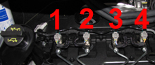

Due to tolerances when manufacturing the injectors the injected fuel quantity may deviate between the actual and calculated fuel quantity. After manufacture these deviations are determined for every injector and a calibration value is determined, the value is converted to a code that is stamped on the injectors. This code is programmed in the engine control unit for each cylinder. Using these codes, the engine control unit corrects the calculated fuel quantity individually for each cylinder and thus improves engine operation and exhaust emissions. With this function, new calibration values can be entered in the engine control unit when replacing injectors or engine control unit.

Every injector has an individual code of 16 characters. Run this procedure to state correct injector code.
The injector code is located on the injector holder.
To enter a new code, select corresponding injector and enter 16-digit code.
See figure. Follow cylinder order (not firing order).
Test conditions:
Ignition on.
Battery voltage above 12V.
Procedure:
Start the function.
Follow the instructions in the program.
The function is done.
If the function fails, check the test conditions and repair any faults.